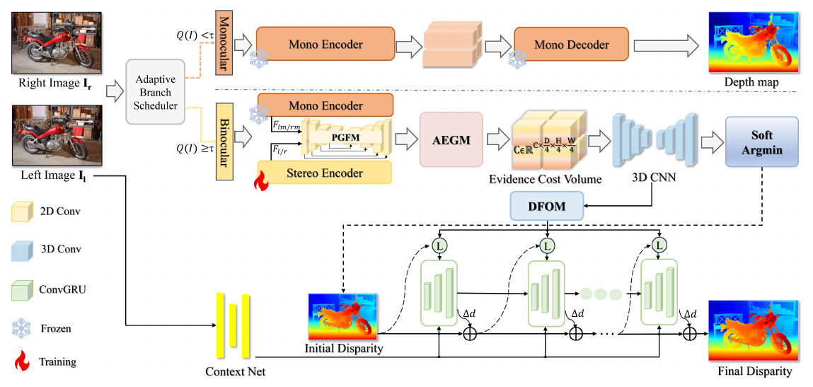

About Me
Hi! I am Fan Zhang (张藩), a master’s student at Liaoning Technical University. I expect to begin my PhD at Dalian University of Technology in September 2027.
My research focuses on stereo matching and multimodal learning. Recently, I have also become interested in unified models, generative models, and vision–language–action (VLA):
- Stereo MatchingCorrespondence estimation and depth perception from stereo image pairs.
- Multimodal LearningLearning from complementary information across different modalities.
- Unified & Generative ModelsExploring unified modeling and generative approaches to visual understanding.
- Vision–Language–ActionInterested in models that connect visual perception, language, and action.
News
2026.10: 🏆 Awarded the National Scholarship.
2026.06: 🎉 PGA-Stereo is published in IEEE Transactions on Circuits and Systems for Video Technology (TCSVT).
2025.10: 🏆 Awarded the National Scholarship.
2024.09: 🎓 Awarded the First-Class Postgraduate Entrance Scholarship.
Publications

PGA-Stereo: Robust Stereo Matching With Monocular Semantic Priors and Evidence-Guided Cost Modulation
TCSVT 2026
Di Jia, , Chen Zhao, Yuqi Liu
† Corresponding author.
Honors and Awards
2026.10 National Scholarship
2025.10 National Scholarship
2024.09 First-Class Postgraduate Entrance Scholarship
Education
- 2027.09 (expected): Dalian University of Technology · PhD studies (incoming).
- 2024.09 – Present: Liaoning Technical University · Master’s studies in Computer Science and Technology (admitted through recommendation).
- 2020.09–2024.06: Liaoning Technical University · Bachelor’s degree in Computer Science and Technology.